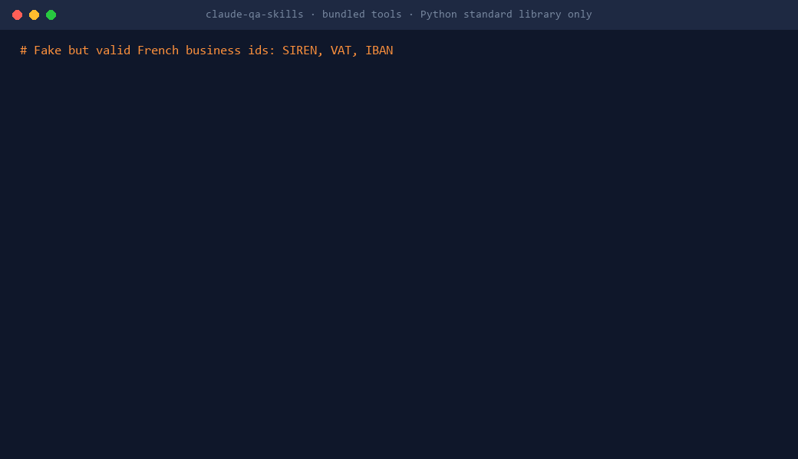

From a fuzzy user story to a go/no-go decision. Test strategy, unit and mutation testing, DORA metrics, Evidence-Based Management, and the checks that matter when coding agents write the code.
/plugin marketplace add RobinBeraud/claude-qa-skills/plugin install qa-test-strategy@claude-qa-skillsclaude plugin marketplace add RobinBeraud/claude-qa-skillsclaude plugin install qa-unit-testing@claude-qa-skillsclaude plugin marketplace add RobinBeraud/claude-qa-skills --scope projectclaude plugin install qa-ai-era@claude-qa-skills --scope projectThese skills make checking faster and harder to fake: they push Claude to plan before editing, write tests that can fail, show evidence before "done", and measure delivery rather than activity.
SFDIPOT and tours, FEW HICCUPPS oracles, RIMGEA bug advocacy, example mapping, decision tables, pairwise, property-based and mutation testing.
Review AI-generated PRs, tests first for agents, evidence before done, audit AI-written tests, evaluate and red-team LLM features.
The five DORA metrics, Evidence-Based Management, quality flow metrics: scripts plus the facilitation to turn numbers into decisions.
Accounting invariants, EN 16931 / Factur-X checks, rounding, DST, multi-tenant isolation, RBAC, migrations, FR/ES/PT localisation.

21 bundled scripts, Python standard library only, each covered by unit tests. Skills call them for you; you can also run them yourself.
Install a whole plugin, then just ask. Claude loads the right skill from your request, or call one explicitly with /plugin:skill.
Three plugins each, then ask in your own words. Claude answers in your language.
| You are | Install | Try asking |
|---|---|---|
| QA engineer / tester | qa-shift-left qa-explore-and-report qa-automation | "Review the testability of this story" · "Write exploratory charters for the payment screen" |
| Developer | dev-workflow qa-unit-testing qa-ai-era + your stack: dev-dotnet dev-web dev-data | "Write unit tests for invoice.py" · "Review this AI-generated PR against the ticket" |
| Tech lead / QA lead | qa-test-strategy qa-ci-insights qa-release | "Write our one-page test strategy" · "Which tests are flaky in these JUnit reports?" |
| Agile coach / manager / PO | dora-metrics evidence-based-management qa-test-strategy | "Compute our DORA metrics from this export" · "Define EBM goals and key value measures" |
| Team on a legacy codebase | dev-legacy dev-delivery dev-security | "Where are the hotspots since January?" · "Which fixes from release/12.4 are missing in 13.0?" |
| ERP / finance / SaaS team | qa-business-apps | "Check this Factur-X invoice" · "Generate permission tests from this roles matrix" |
Run once in your project and commit .claude/settings.json.
claude plugin marketplace add RobinBeraud/claude-qa-skills --scope project claude plugin install qa-ai-era@claude-qa-skills --scope project
Claude Code registers the marketplace and the plugins for everyone who trusts the folder. Nothing else to install.
Enable auto-update in /plugin > Marketplaces, or run /plugin marketplace update claude-qa-skills.
A folder with a SKILL.md: a description Claude uses to decide when to load it, and instructions it follows (steps, output format, pitfalls), sometimes with a script. Skills only load when relevant, so installing many costs little context.
Only for the bundled scripts (Python 3.9+, standard library only). All skills work without them.
Yes. Skills are written in English but tell Claude to answer in your language. Some skills target French business rules (SIREN/SIRET, Factur-X, RGAA).
Copy any plugins/<plugin>/skills/<skill>/ folder into ~/.claude/skills/ or your repo's .claude/skills/.
Open an issue with your idea, or a pull request following CONTRIBUTING.md. Every skill is validated in CI and every script has a test.
Stars help other testers and developers find these skills. New skills land regularly.
★ Star claude-qa-skills on GitHub